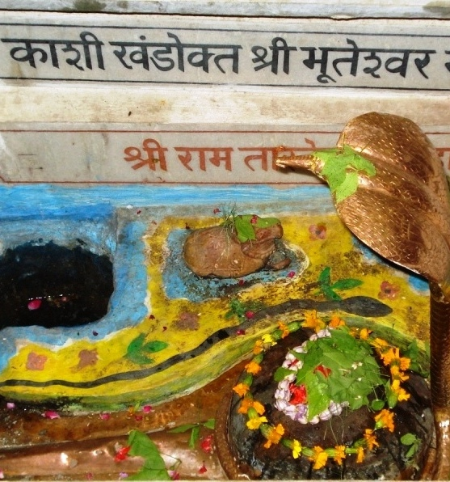

<?xml version="1.0" encoding="UTF-8"?><rss version="2.0"
	xmlns:content="http://purl.org/rss/1.0/modules/content/"
	xmlns:wfw="http://wellformedweb.org/CommentAPI/"
	xmlns:dc="http://purl.org/dc/elements/1.1/"
	xmlns:atom="http://www.w3.org/2005/Atom"
	xmlns:sy="http://purl.org/rss/1.0/modules/syndication/"
	xmlns:slash="http://purl.org/rss/1.0/modules/slash/"
	>

<channel>
	<title>Bhooteshwar &#8211; Varanasi Temples</title>
	<atom:link href="index.html" rel="self" type="application/rss+xml" />
	<link>../../../../../index.html</link>
	<description>Temples of Varanasi as referred to in Kashi Khand</description>
	<lastBuildDate>Thu, 19 Jun 2025 05:16:46 +0000</lastBuildDate>
	<language>en-US</language>
	<sy:updatePeriod>hourly</sy:updatePeriod>
	<sy:updateFrequency>1</sy:updateFrequency>
	<generator>https://wordpress.org/?v=4.6.29</generator>
	<item>
		<title>BHOOTESHWAR</title>
		<link>../../../../../shiva-temples/bhooteshwar/index.html</link>
		<pubDate>Sun, 09 May 2010 03:50:41 +0000</pubDate>
		<dc:creator><![CDATA[admin]]></dc:creator>
				<category><![CDATA[Bhooteshwar]]></category>
		<category><![CDATA[Other Shiva Temples (A-D)]]></category>
		<category><![CDATA[Shiva Temples]]></category>

		<guid isPermaLink="false">../../../../../p=253.html</guid>
		<description><![CDATA[On a request by Goddess Parvati, Lord Shiva narrated the various deities/ Shiv Lings/Teerths (Sacred Ponds) spread over the expanse of Kashi. (Kashi Khand, Chapter 97). Kashi Khand mentions one such powerful Shiv Ling known as Bhooteshwar in the vicinity of various other Shiv Lings. (BHOOTESHWAR) Devotees who worship Bhooteshwar will be blessed with all [&#8230;]]]></description>
				<content:encoded><![CDATA[<p>On a request by Goddess Parvati, Lord Shiva narrated the various deities/ Shiv Lings/Teerths (Sacred Ponds) spread over the expanse of Kashi. (Kashi Khand, Chapter 97).</p>
<p>Kashi Khand mentions one such powerful Shiv Ling known as Bhooteshwar in the vicinity of various other Shiv Lings.</p>
<p></p>
<p style="text-align: center;"><strong>(BHOOTESHWAR)</strong></p>
<p>Devotees who worship Bhooteshwar will be blessed with all sorts of wealth and prosperity.</p>
<p><strong><span style="text-decoration: underline;">LOCATION OF BHOOTESHWAR</span></strong></p>
<p>Bhooteshwar is located at Bhooteshwar Gully, Dasaswamedh.  This is a famous locality and people can travel upto Dasaswamedh Ghat Bata Shop area by rickshaw and enquire about Bhooteshwar Gully.  The temple also houses one Shani Idol which is worshipped by devotees.  Alternatively, devotees can take a boat ride upto Dasaswamedh Ghat by boat and climb the steps.</p>
<p><strong><span style="text-decoration: underline;">TYPES OF POOJA</span></strong></p>
<p>The temple is open from 05.00 a.m. to 01.00 p.m. and from 05.00 p.m. to 09.30 p.m.  Aarties are conducted in the morning and evening.  During closed time, devotees can have darshan through grill gates.  The timings are flexible.</p>
<p><strong><span style="text-decoration: underline;">POOJARIES OF THE TEMPLE</span></strong></p>
<p>Shri Ashok Joshi is one of the priests attached to the temple and he can be contacted on his phone 0542-2452615 for performing any special pooja, Rudra Japam etc.</p>
]]></content:encoded>
			</item>
	</channel>
</rss>
